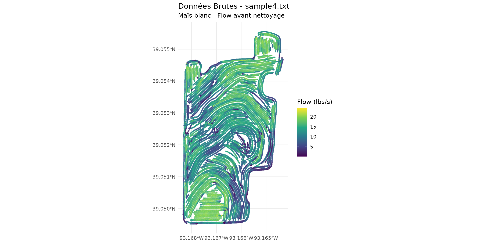
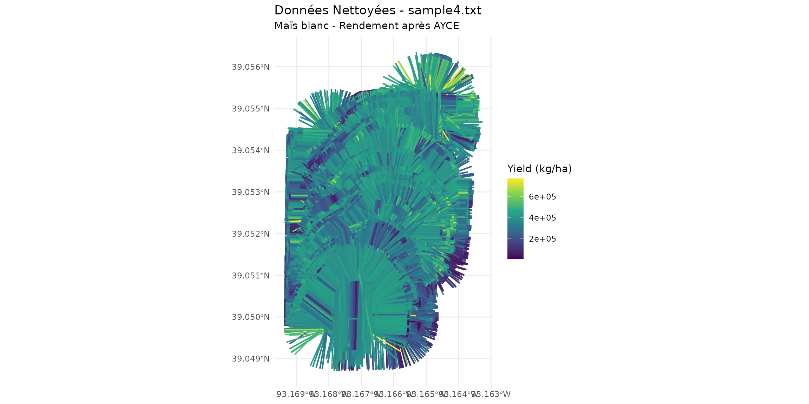

Introduction
Ce fichier contient des données de rendement de maïs blanc collectées par une moissonneuse-batteuse.
Données Brutes
file_path <- system.file("extdata", "sample4.txt", package = "yieldcleanr")
data_raw <- read_yield_data(file_path)## Distance detectee en pouces (moyenne: 60.6 ) - conversion en metres
cat("Données brutes:\n")## Données brutes:## Lignes: 19495## Flow moyen: 12.49 lbs/s## Grain type: CORN WHITEVisualisation des Données Brutes
data_raw_sf <- sf::st_as_sf(data_raw, coords = c("Longitude", "Latitude"), crs = 4326)
ggplot() +
geom_sf(data = data_raw_sf, aes(color = Flow), size = 0.5, alpha = 0.7) +
scale_color_viridis_c(name = "Flow (lbs/s)") +
theme_minimal() +
labs(title = "Données Brutes - sample4.txt", subtitle = "Maïs blanc - Flow avant nettoyage")
Nettoyage avec AYCE
cleaned <- clean_yield(
file_path = file_path,
metrique = TRUE,
polygon = TRUE
)## ================================================
## Yield Data Cleaning Pipeline
## Output: Metric (kg/ha)
## Geometry: Polygons
## ================================================
##
## Etape 1 : chargement des donnees...
## Distance detectee en pouces (moyenne: 60.6 ) - conversion en metres
## - 19495 raw observations loaded
## Etape 2 : conversion en coordonnees UTM...
## Zone UTM detectee: 15
## Etape 3 : PCDI - optimisation du delai de flux...
## === PCDI: Phase Correlation Delay Identification ( Flow ) ===
## Delai optimal ( Flow ): -25 secondes
## RSC a l'optimal : 0.3627
## Stabilite (CV) : 0.001
## Delai optimal flux: -25 secondes
## Etape 3b : PCDI - optimisation du delai d'humidite...
## === PCDI: Phase Correlation Delay Identification ( Moisture ) ===
## Delai optimal ( Moisture ): 6 secondes
## RSC a l'optimal : 0.3662
## Stabilite (CV) : 5e-04
## Delai optimal humidite: 6 secondes
## Etape 3c : calcul du rendement initial pour les seuils...
## GrainType non reconnu, utilisation 56 lbs/boisseau (mais par defaut)
## Yield calcule: 5092.4 bu/acre (lbs/bu = 56 )
## Etape 4 : calcul des seuils automatiques...
## === Automatic Threshold Calculation (AYCE) ===
## Yield: Yield_buacre MIN = 0 MAX = 11091.65
## Velocity: MIN = 0.5 MAX = 4.61
## Position: X[ 485341 - 485854 ]
## Position: Y[ 4322202 - 4323011 ]
## Etape 5 : filtre header...
## Rows: 19484
## Etape 6 : filtre GPS...
## Rows: 19484
## Etape 7 : calcul de la vitesse...
## Etape 8 : filtre vitesse...
## Rows: 18750
## Etape 9 : correction du delai de flux ( -25 s)...
## Flow delay correction: 25 seconds, 25 points elimines (valeurs NA)
## Rows: 18725
## Etape 9a : correction du delai d'humidite ( 6 s)...
## Moisture delay correction: -6 seconds, 6 points elimines (valeurs NA)
## Rows: 18719
## Etape 9b : calcul du rendement apres delai...
## GrainType non reconnu, utilisation 56 lbs/boisseau (mais par defaut)
## Yield calcule: 5230.7 bu/acre (lbs/bu = 56 )
## Etape 9c : recalcul des seuils apres delai...
## === Automatic Threshold Calculation (AYCE) ===
## Yield: Yield_buacre MIN = 0 MAX = 11532.97
## Velocity: MIN = 0.5 MAX = 4.29
## Position: X[ 485341 - 485854 ]
## Position: Y[ 4322202 - 4323011 ]
## Etape 9d : validation de Pass via analyse de direction...
## Pass column has 135 unique values
## Pass column appears reasonable, using as-is
## Etape 9e : suppression des points de bordure lies au delai...
## 3009 boundary points removed ( end , delay: -25 s = 22 points)
## Etape 10 : suppression des rendements nuls...
## Rows: 15710
## Etape 11 : filtre plage de rendement...
## Yield range filter: 101 points elimines (rendement hors plage: 0 - 11533 )
## Rows: 15609
## Etape 12 : filtre humidite (auto-detection)...
## Moisture auto-range: 16.6 - 27.4 (mean +/- 3 SD = 22 +/- 1.8 )
## Moisture range filter: 172 points elimines (humidite hors plage: 16.6 - 27.4 )
## Rows: 15437
## Etape 13 : filtre de chevauchement bitmap...
## === Bitmap Overlap Filter ===
## Donnees etendues - utilisation du bitmap sparse
## Overlap ratio: min 0 max 1
## Overlap filter: 1696 points elimines (11%)
## Rows: 13741
## Etape 14 : filtre ecart-type localise...
## === Localized SD Filter ===
## Local SD filter: 147 points elimines (1.1%)
## Rows: 13594
## Etape 15 : validation et controle qualite...
## === AYCE Validation & Quality Control ===
## Retention rate: 69.7 %
## Raw CV: 35.4 %
## Clean CV: 33.2 %
## Retention rate: 69.7 %
## Etape 16 : formatage de la sortie...
## Etape 16b : calcul du cap...
## Etape 16b.1 : lissage du cap par segments...
## Etape 16c : creation de l'objet SF polygones...
## Creation d'un objet SF avec polygones...
## Creation des geometries des polygones...
## Objet SF cree : 13594 polygones
##
## ================================================
## Termine : 13594 observations nettoyees
## Rendement moyen : 344986 kg/ha
## ================================================Visualisation des Données Nettoyées
ggplot() +
geom_sf(data = cleaned, aes(color = Yield), size = 0.5, alpha = 0.7) +
scale_color_viridis_c(name = "Yield (kg/ha)") +
theme_minimal() +
labs(title = "Données Nettoyées - sample4.txt", subtitle = "Maïs blanc - Rendement après AYCE")